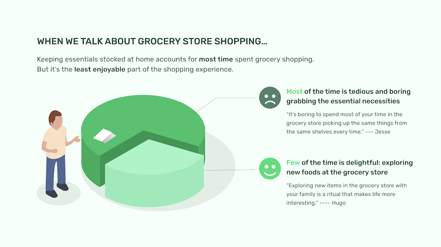
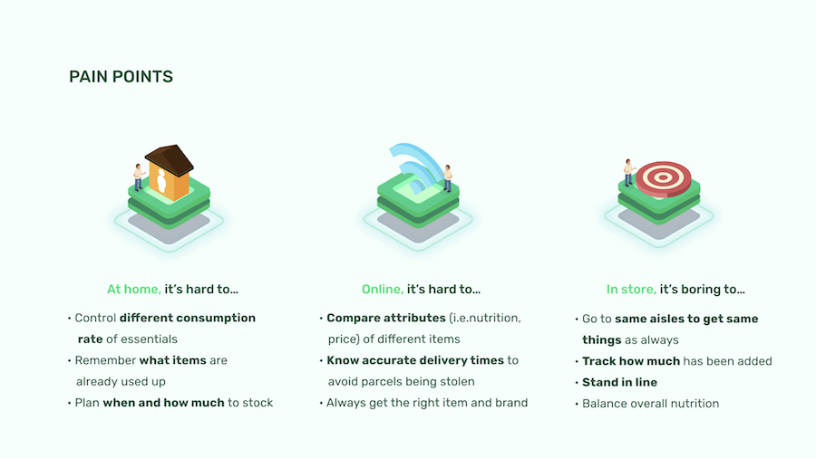
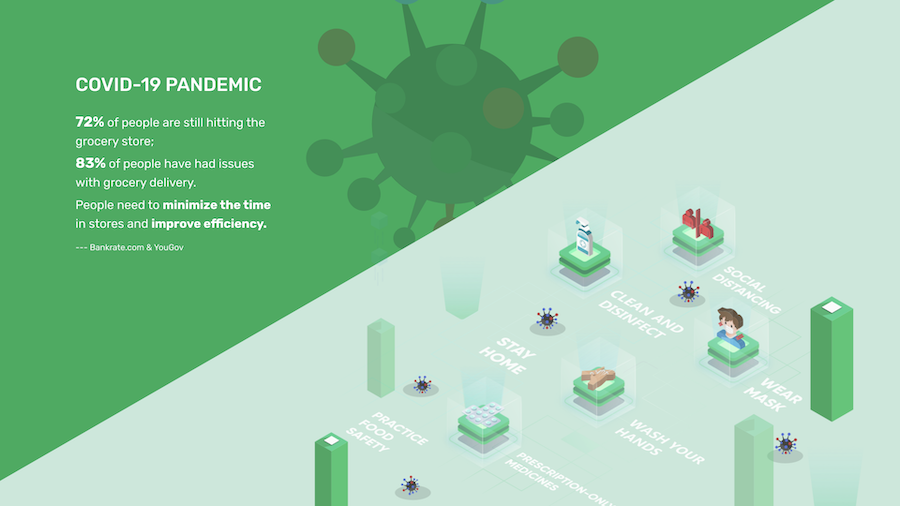
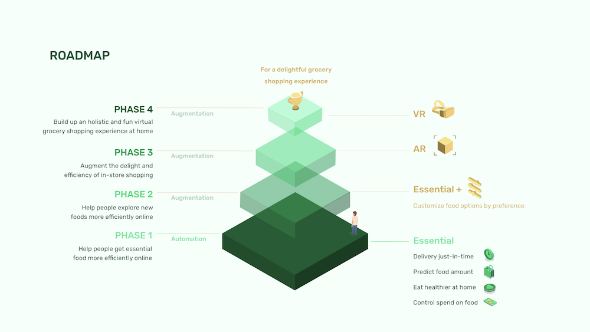
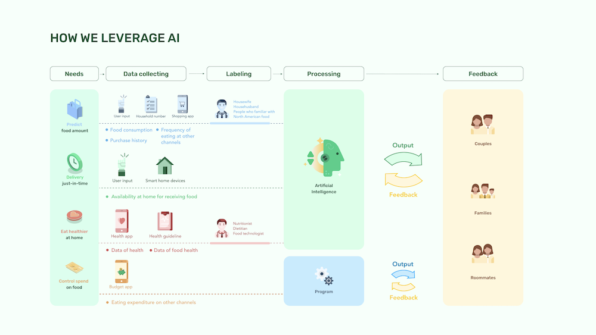
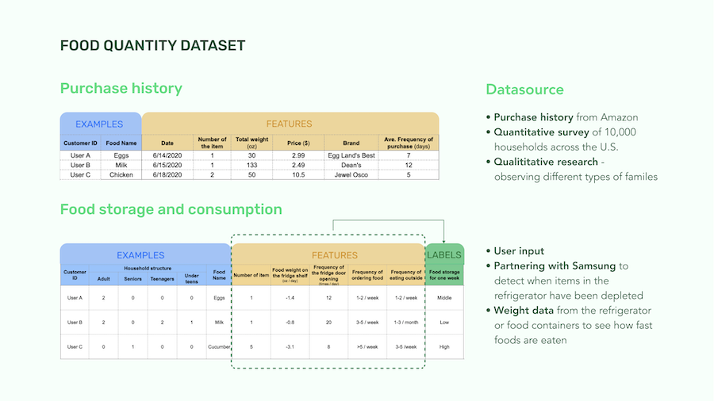
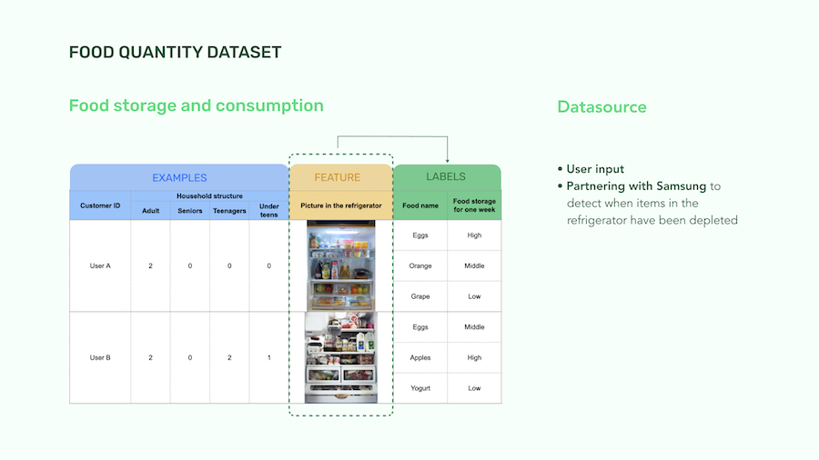
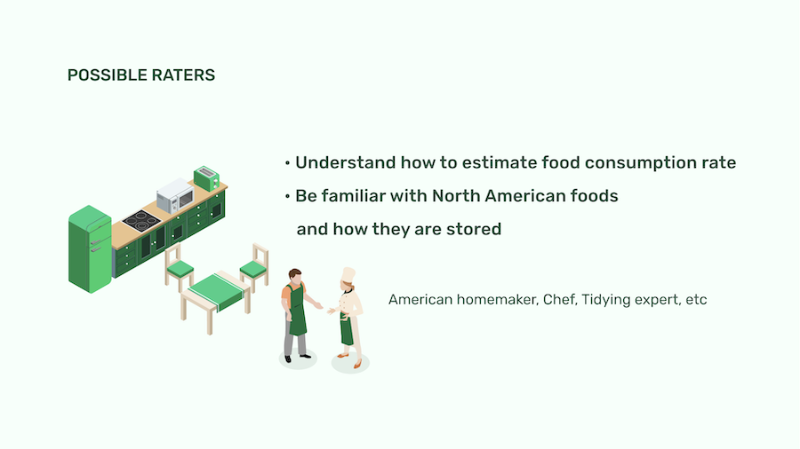
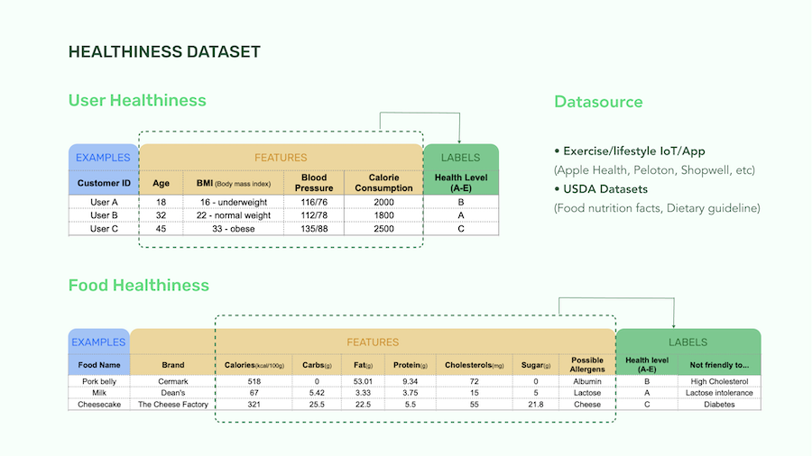
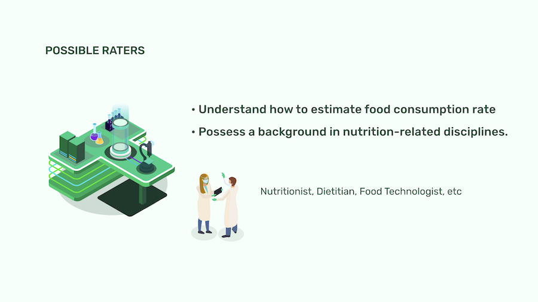

Overview
Essential is AI-powered grocery delivery service that automatically
estimates food consumption and order foods that would be used up soon.
My design team created this concept for an internal competition at ID
sponsored by Google Waymo.
We considered not only UX/UI design but also dataset, backside system
and how we would leverage AI to solve complex problems.
Problem Framing
When we talk about grocery store shopping, keeping essentials stocked at home accounts for most time spent grocery shopping.
But it’s the least enjoyable part of the shopping experience.



Data System


How did I contribute?
I created drafts of the roadmap and the system diagram by summerizing what were discussed in the team. I polished the roadmap while the teammate finalized the system diagram.
Draft of the roadmap

Draft of the datasystem diagram





